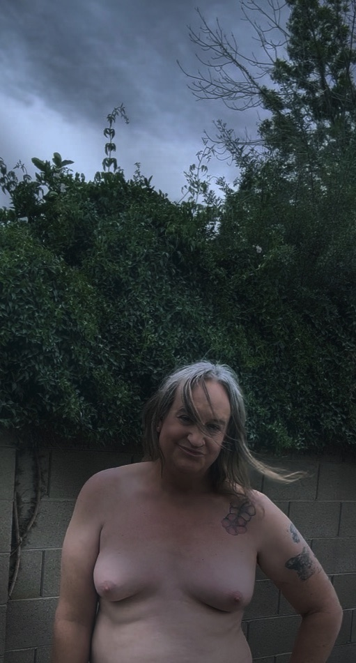
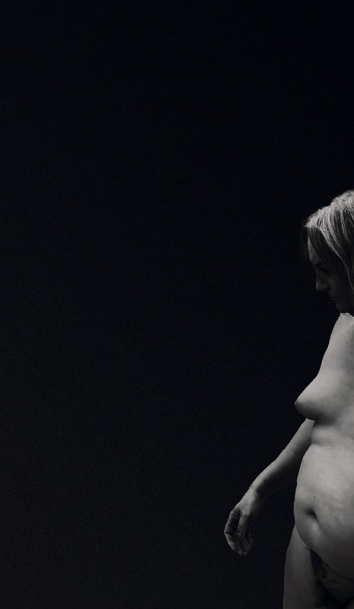
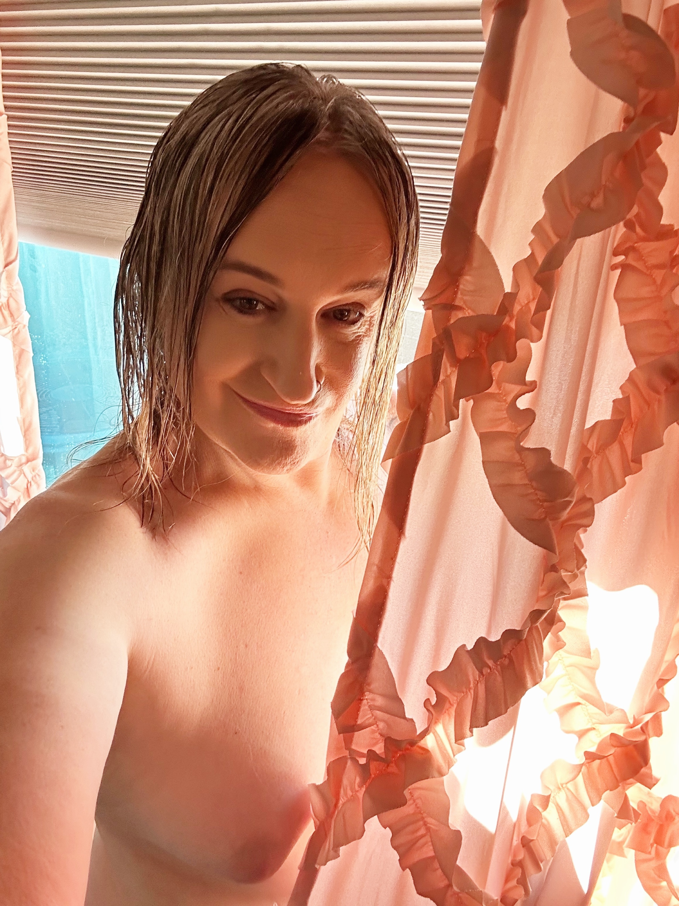
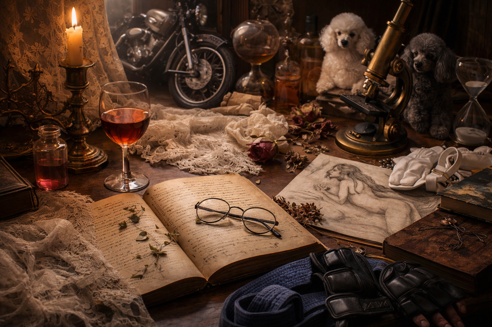

When the Mirror Stopped Arguing With Me
A reflection on embodiment, self-recognition, and the moment the body begins to feel like home. Read on Substack

A developing body of work exploring femininity, embodiment, memory, ritual, and the quiet ways identity settles into form.
This space holds photography and writing together — not as separate disciplines, but as parts of the same unfolding life.
A reflection on embodiment, self-recognition, and the moment the body begins to feel like home. Read on Substack
A reflection on renovation, residue, and the quiet work of cleaning after change.
Memory, lineage, and the machines that carried love across generations. Read on Substack
Observations from the craft of grooming, where patience, attention, and relationship shape the work.
A small meditation on unwinding, beauty, and the art of closing the day gently. Read on Substack
A moment of youth, stillness, and becoming. Read on Substack
A philosophical reflection on personhood, meaning, and the dignity that should remain intact across difference.
A softer note on affection, tenderness, and the small emotional rituals that shape a life.




